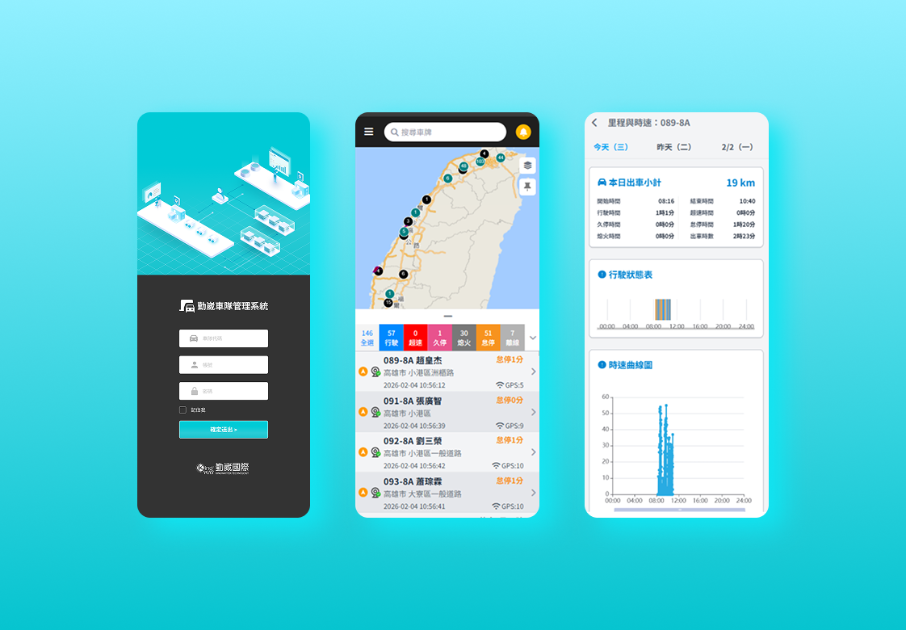
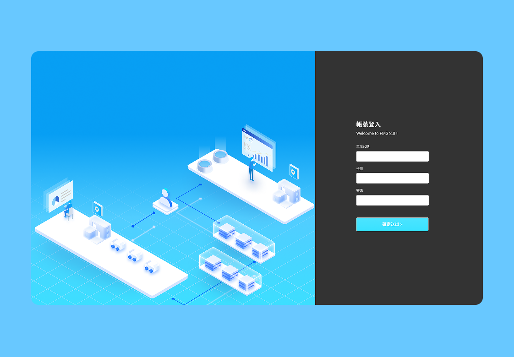
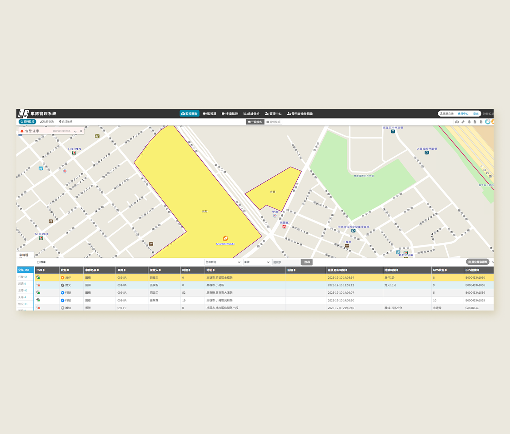

2023 - Now
勤崴國際
2020 - 2022
ECS 精英電腦

即時監控平台 / 前端開發
使用技術： Angular 20, TypeScript, OpenLayers, ECharts, Tailwind CSS, Figma, PrimeNG

KW Map 地圖監控 / 資料分析 / 管理端優化
使用技術： Angular 20, TypeScript, KW Map, ECharts, Tailwind CSS, Figma, PrimeNG, Playwright

地圖效能與使用體驗優化
使用技術： Vue2, Echart, JS, Vuetify
這些年持續投入於前端系統開發，從介面實作到系統整合，累積了實務經驗與對產品穩定性的重視。
未來期望持續精進前端架構、效能與使用者體驗，在團隊中創造長期且可維護的價值。